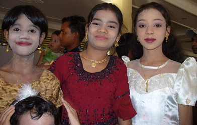

December 19, 2005
Hi Folks,
......................................................................
This email was written in Mandalay, Myanmar when an Internet Cafe encouraged
me to put my laptop online through his network. We were able to surf the net,
but not send email with Juno nor Eudora. Each attempt ended with no text, or
the message "Prohibited site". Sent 8 Jan 2006 after returning to Bangkok.
.......................................................................
I didn't think it was possible, but here comes an email from Mandalay, Myanmar.
|
Took a side trip to Sagaing, capital of a Shan kingdom from 1315 to 1364. The entire region is studded with stupas ranging from red brick or white-wash to gold or silver. It really makes an impressive sight. Today, the region supports many Buddhist monasteries and nunneries. Highlights of the trip included a visit to a 575-year old pagoda. |
|
The market closes on the first day of a full moon. On the first and second day, monks roam the streets in pairs, with a bell strung from a pole carried between them. Buddhists know the sound as the monthly call for (cooked) rice. Unfortunately this was explained to me after the last sighting, but as luck would have it, a bronze casting of the scene is located at the Mahamuni Paya. |

Across from the closed market on the first day of the full moon, I spotted the word "Co-op" on the side of a building. Investigating the staircase nearby thrust me into the middle of a wedding celebration. The families were both Muslim, and insisted on feeding me cake and ice cream. What a photo op! Observations similar to the West: Music just as loud. People gathered in like-aged groups. Children run rather wild on the stage. A table set up for gifts. Flowers. Cake. Food.
The next Internet cafe may not be until mid-January, so Happy Holidays to all.
Bill
=================================
"Travel is Fatal to Bigotry, Prejudice, and Narrow-minded ness" ....
attributed to Mark Twain